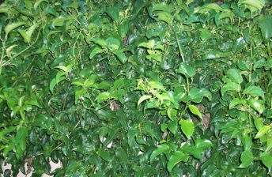
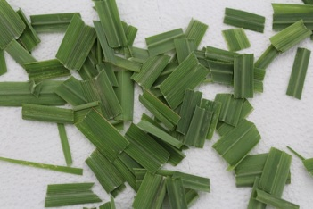
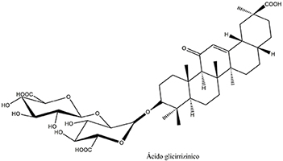

Os medicamentos da biodiversidade podem ser de origem vegetal, animal ou de microrganismos que são as mais comuns. Apesar de apresentarem etapas similares em relação à pesquisa, (ensaios pré-clínicos e clínicos), estes se diferenciam nas etapas de obtenção e produção.
Neste módulo, daremos ênfase a pesquisa e à produção de medicamentos da biodiversidade de origem vegetal. Para compreendermos melhor os estágios de produção de medicamentos, temos que conhecer alguns conceitos que serão apresentados a seguir.
Vamos começar com duas definições que, às vezes, podem confundir: planta medicinal e droga vegetal.
 A planta medicinal é a espécie vegetal, cultivada ou não, utilizada com propósitos terapêuticos. Por exemplo, o guaco (Mikania glomerata, Spreng.) empregada no tratamento da tosse (BRASIL, 2011).
A planta medicinal é a espécie vegetal, cultivada ou não, utilizada com propósitos terapêuticos. Por exemplo, o guaco (Mikania glomerata, Spreng.) empregada no tratamento da tosse (BRASIL, 2011).
Já a droga vegetal é a planta medicinal, ou suas partes, que contenham as substâncias, ou classes de substâncias químicas que são responsáveis pela ação terapêutica, após terem passadas por processos de coleta, estabilização, e secagem, podendo estar na forma íntegra, rasurada, triturada ou pulverizada. Por exemplo, as folhas pulverizadas de guaco (Mikania glomerata, Spreng (BRASIL, 2011).
Observando as fotos abaixo podemos observar que a primeira (a esquerda) apresenta a planta medicinal Mikania glomerata Spreng, o guaco. Quando ela passa por processos como, por exemplo, uma trituração, ela passa a ser considerada uma droga vegetal (a direita).
 
Quando a planta medicinal ou a droga vegetal são usadas como matéria-prima para fabricação ou elaboração de um medicamento, estas são chamadas de matéria-prima vegetal (BRASIL, 2011).
- A matéria-prima vegetal é a planta medicinal fresca, droga vegetal ou derivado vegetal empregado na fabricação ou na elaboração de medicamentos. É o material de partida para a produção de intermediários, e é considerada um insumo farmacêutico ativo. Por exemplo, folhas secas rasuradas de guaco (Mikania glomerata, Spreng.) (BRASIL, 2011).
A partir da planta medicinal ou da droga vegetal podemos extrair o princípio ativo que é a substância que deverá exercer efeito farmacológico. Por exemplo, quercetina, encontrada em diversas plantas medicinais (como Ginkgo biloba e Hypericum perforatum), e que apresenta atividade antioxidante.
Algumas vezes, não é possível identificar- se a substância ativa da planta medicinal ou droga vegetal. Quando isto ocorre, busca-se a identificação do(s) marcador(es), que são as substâncias ou classe de substâncias químicas, que estão presentes na planta medicinal ou na droga vegetal, e que, preferencialmente, tem correlação com o efeito terapêutico. Os marcadores são utilizados como referência no controle de qualidade da matéria-prima vegetal e dos fitoterápicos. Por exemplo, o ácido glicirrizínico é o marcador presente nos extratos ou tinturas de alcaçuz (Glycyrrhiza glabra L.).
